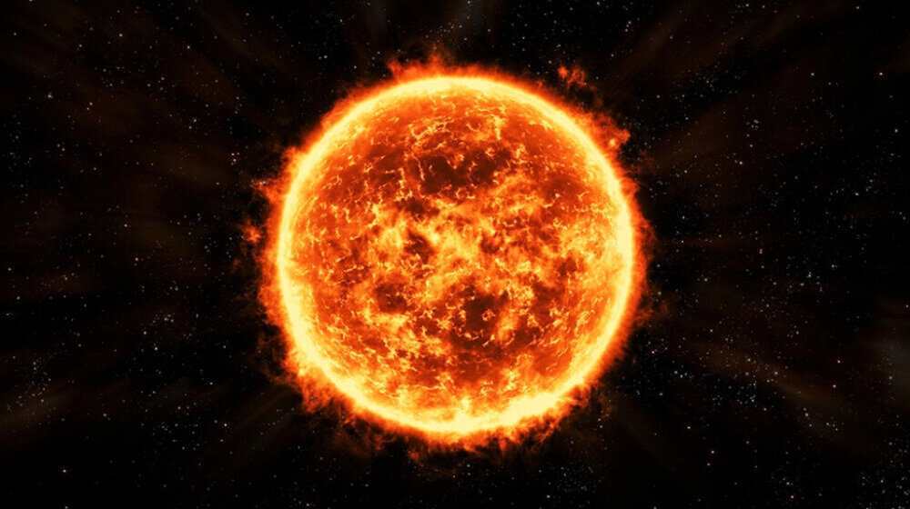

Sunce je zvezda precnika 1,3 miliona km, centar Sučevog sistema, po cemu je on i dobio ime, oko njega kruzi 8 planeta sa svojim satelitima i nekoliko patuljastih planeta, asteroida, kometa, meteora i cestica kosmicke prasine. Toliko je veliko da u njega Zemlja moze stati 1,3 miliona puta, a staro je vise od 4,5 milijarde godina. Prosecna udaljenost Zemlje od Sunca je oko 150 miliona kilometara, a to rastojanje je jedna astronomska jedinica i zbog toga suncevim zracima treba oko 8,3 minuta da dodju do Zemlje. Sunce "gori" jer dolazi do fuzije jezgara vodonika u helijum i to ispusta nuklearnu energiju koja je najveca energija nama poznata, u tom procesu ispustaju se fotoni u vidu Suncevog zracenja koji nama na zemlji dolaze kao svetlost i toplota. Postoje solarni vetrovi koje Sunce izbacuje, to su elektroni i protoni koji velikom brzinom napustaju Sunce i magnetsko polje zemlje ih rasipa, ova pojava se na zemlji vidi kao Aurora borealis ili Polarna svetla, mogu se videti na severnim delovima Evrope
